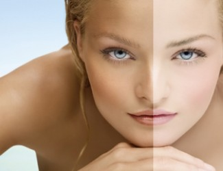

Lighten Skin

1. In 1 tablespoonful of yogurt add 8-10 drops of lemon juice. Mix well and apply as a night cream. You can add a drop of Lavender or Rose oil to this. Apply on the neck as well. Lemon juice is great for lightening skin, if your skin cannot tolerate lemon juice use tomato puree instead.
2. Take a small slice of ripe papaya and mash it well with a fork. Add a spoonful of fresh cream or yogurt to this, squeeze a few drops of lemon juice and mix well. Apply on the face and neck for 20 - 30 minutes.
3. Crush 2-3 fresh strawberries; add a drop of honey to this and a few drops of lemon juice. Leave on the face and neck for 15 - 20 minutes and wash off.
4. Extract the juice of half an orange - around 2 teaspoons, mix a teaspoon of thick cream or milk powder to this and apply for 20 minutes before washing off.
5. Apply a thick layer of mashed bananas, leave it on the neck and face for 20 minutes before washing with tepid water.
6. Make a paste with 1 tablespoon of milk powder, half a teaspoon of honey and a few drops of lemon juice. Mix well and apply on the face and neck. Wash well after 20 minutes.
7. The water got from a tender coconut is very good when used to rinse the skin. It removes scar marks and blemishes too. Rinse your face with this water morning and evening – leave it for 15 minutes before washing.
8. Boil 1 teaspoon of cumin seeds in a glass of water. Cool. Rinse face and neck with this concoction for a glowing complexion.
9. When you don’t have time for any of the above, halve a lemon and gently rub in a circulation motion on the face, arms and legs. Wash after half an hour.